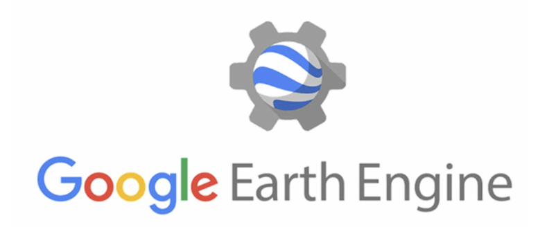
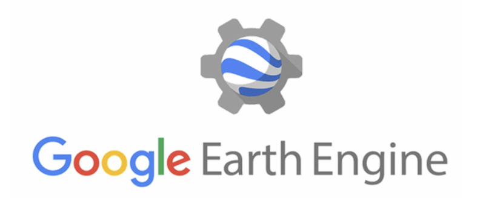

About me
Curious and committed by nature, I’m passionate about GIS, imagery, and multi-source data management. I hold a Master’s degree in GIS from AgroParisTech, where I developed a strong interest in how spatial data and technology can be leveraged to better understand and support our world.
My growing interest in programming and web development has led me to pursue online training through FreeCodeCamp.org, where I’m strengthening my ability to build meaningful GIS apps.
Beyond GIS, I’m deeply interested in humanitarian work I’ve engaged with through professional experiences and volunteer projects. Recently, during my time in Australia, I joined community food programs supporting remote Aboriginal communities near Alice Springs.
I’m also passionate about OSINT (Open Source Intelligence) and geospatial investigation, regularly following the work of Bellingcat and completing complementary training with the Institut d’Étude de Géopolitique Appliquée.
Outside of work, I’m an avid traveler and trekker. I solo-crossed New Zealand’s South Island and enjoy immersing myself in new cultures and landscapes.
My background and passions reflect a curious, engaged, and motivated mindset, driven by the desire to contribute to projects with purpose and impact.
Projects
Mapping
Remote Sensing
Applications and Projects:
- Photo Interpretation: Manual analysis of satellite imagery to extract meaningful information.
- Orthorectifications: Correcting satellite images for geometric distortions to produce accurate map-like representations.
- Atmospheric Corrections: Removing atmospheric interference to improve the accuracy of satellite images.
- Classification Methods: Implementing various classification techniques such as Bayes, Support Vector Machine (SVM), and Random Forest to categorize different land cover types.
- Post Classification Processing: Refining classification results to improve accuracy and usability.
Specific Image Processing Tasks:
- Cloud Masking: Creating masks to exclude cloud-covered areas from analysis.
- Segmentation: Dividing images into meaningful segments for detailed analysis.
- Built-Up Change Detection: Identifying and analyzing changes in urban and built-up areas over time.
- NDVI Change Detection: Monitoring changes in vegetation health and coverage using the Normalized Difference Vegetation Index (NDVI).
Software utilized:
- Google earth Engine (GEE)
- Orfeo Tool box (OTB)
Types of Images Handled:
- Sentinel 1 & 2
- WorldView-2/3 (WV02/03)
- SkySat
- Pleiade-Neo
Supervised classification based on Sentinel 2 images
 

Programming & Data management
Python script creation:
- for standardization and cleansing of large datasets
- automated data import into a PostgreSQL database
- Remote Sensing
Model Builder
Development of a QGIS plugin to automatically detect areas where drones are not allowed to fly. Via QT-Designer, man-machine interaction has been created. At the plugin's output, 3 vector layers describe the drone's usage restrictions:
- Total ban
- >50m height restriction
- >100m height restriction
Webmapping
Development of a webmapping application based on a 3-tier infrastructure:
- I created a user-friendly, interactive user interface using technologies such as HTML, CSS and JavaScript.
- I used the Apache server to host my web application files.
- I chose PostgreSQL as the database management system to store and organize my geographic data.
Plugin QGIS
Hiking Webmap
References
| Name | Organisation | Position | Phone number | ||
|---|---|---|---|---|---|
| Sven Schmitz-Leuffen | International Committee of the Red Cross (ICRC) | Geodata & GIS Lead | sschmitzleuffen@icrc.org | +41 22 730 1234 | |
| Philippe Pailler | Centre National d'Etudes Spatiales | Chef de Service Environnement Sauvegarde Sol | Philippe.Pailler@cnes.fr | X | |
| Jean Francois GIRRES | Université Paul Valéry Montpellier | Responsable du master Géomatique | jean-francois.girres@univ-montp3.fr | X |